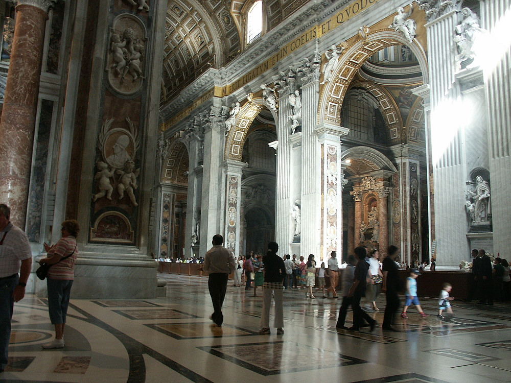

Johnnie and Oberta Baker's Photo Album Previous Gallery Next
|

A brief stop at the beginning of the central nave offers a magnificent view: grandeur, splendor, spiritual peace and serene joy come together here. The immensity of the place, the harmonious ceiling, the colored marble floors, the statues of the saints who founded religious orders and congregations in the niches of the pillars, in fact, they are the jewels and true pillars of the Church. |